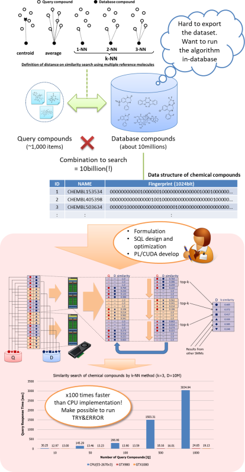

Database Tuning Service
Our professional engineer analyzes your workloads based on our detailed knowledge, identifies the causation of query slow-down. Then, we will propose an optimal approach to accelerate the problematic workloads from the viewpoint of cost-effectiveness, project period and so on.
Step-1: Analysis of the workloads, diagnosis, and proposition of measures
- We analyze customer's workloads, then make a diagnosis why problematic queries got slow-down.
- Based on the diagnosis, we shall propose an optimal way to accelerate the problematic workloads from the viewpoint of cost-effectiveness, project period and so on.
Step-2: Improvement by PostgreSQL parameters and system configuration
- We propose reasonable configuration parameters of PostgreSQL and operating system configuration around storage system, prior to individual query optimization.
- These configuration can cause inefficient query plan generation or extremely less utilization ratio of CPU or I/O, so it needs reasonable configuration according to the system scale and workloads characteristics.
Step-3: Tuning by data structure revising and query rewrites
- Our professional engineer applied fundamental database tuning like data structure revising or query rewrites.
- In batch or analytic queries, it is not rare that inadequate query execution plan by wrong query optimization leads 100 times, often 10000 times, slower query execution performance than the optimal grade.
User case
X-company is dissatisfied with batch query slow-down on terabytes scale database, and they considered a high-end DB product like Oracle Exadata, AWS RedShift and so on. HeteroDB also had a chance to introduce PG-Strom for them. However, according to their explanation, it looks to us the problem comes from inadequate data structure and inefficient query execution plan, rather than the performance of query execution engine. So, we proposed our database tuning service instead of the product. By the result of a week investigation, it became clear that inefficient index usage and wrong query execution performance. Eventually, we pulled up the database performance by applying PostgreSQL v11 partitions and individual query tuning. Rather than adoption of a high-end DB product, the entire DB system performance could be improved to a level where it was able to consider reducint the DB instance size.
R&D Support Service
- We support research & development missions, at the technology area where we have experienced: PostgreSQL database, Linux operating system, GPU computing (NVIDIA, CUDA C), and related areas.
Customer case
Y-company, develops a next-generation data processing solution, considers to utilize NVIDIA GPUDirect RDMA for peer-to-peer data transfer system between a device and GPU, CPU bypassed. They invited us to the project, because HeteroDB has been well experienced in this region by the development of SSD-to-GPU Direct SQL of PG-Strom. In the project, we had provided comments and propositions for use of GPUDirect RDMA, hints to pull out its performance, advices and hypothesis on trouble shooting from the technology standpoint. Then, the project can be closed with expected performance in two months.
GPU Software Development
- Our professional engineers who are experienced in GPU, CUDA C and parallel computing support GPU software development.
- Depending on the characteristics of customer workloads, we are able to provide a solution leveraged by the data-frame of PG-Strom we we are able to propose a combined solution with flexible data management by SQL and large-scale parallel computing by GPU, leveraged by GPU data-frame functionality of PG-Strom.
Research Case - Acceleration of Drug Discovery workloads
In a joint project with company-Z who researches drug discovery, we reimplemented the chemical distance similarity search algorithm for GPU devices. By the algorithm improvement with divide-and-conquer and top-k calculation on the shared memory, our software pulled out x100 times faster performance than CPU version.
